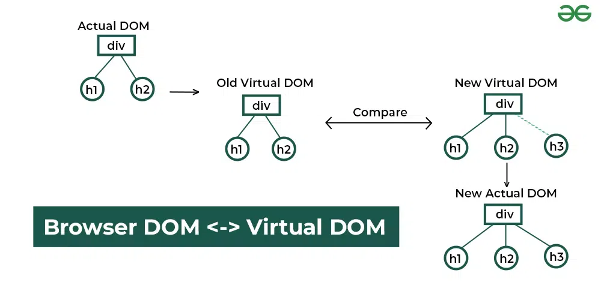
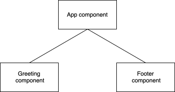

Web Application Development
CSC13008-23KTPM1
Note 06 - React
Lecturer: Đỗ Nguyên Kha
Semester 1/2025-2026 @ FIT-HCMUS
Content
- Virtual DOM
- Component
- JSX
props- Handling Events
- Hooks
useStateuseEffect
Introduction to React
React’s declarative and component-based approach offers solutions to the challenges faced when using plain JavaScript for dynamic UIs.
const App = () => {
const handleClick = () => {
alert("Button Clicked!");
};
return (
Welcome to React
);
};
Virtual DOM
The real DOM is the actual DOM tree that the browser renders and displays to the user. This means any changes made to the real DOM are immediately reflected on the user's screen, but direct manipulation can be inefficient for complex or frequent updates due to the performance cost of re-rendering the UI.
Virtual DOM
1. Initial real DOM
Examine the starting point of our application by viewing the initial HTML structure rendered in the browser. In this step, the initial real DOM rendered by the browser is created.
Hello
React
Virtual DOM
2. Initial rendering and virtual DOM creation
In this step, React creates a virtual DOM that mirrors the initial real DOM.
const virtualDOM = {
type: 'div',
props: {},
children: [
{
type: 'h1',
props: {},
children: ['Hello'],
},
{
type: 'h2',
props: {},
children: ['React'],
},
],
};
Virtual DOM
3. UI update triggered
Next, update the UI by adding a new header element:
Hello
React
Element
Virtual DOM
4. Updated virtual DOM creation
In this step, React creates an updated virtual DOM that includes the new header element.
const updatedVirtualDOM = {
type: 'div',
props: {},
children: [
{
type: 'h1',
props: {},
children: ['Hello'],
},
{
type: 'h2',
props: {},
children: ['React'],
},
{
type: 'h3',
props: {},
children: ['Element'],
},
],
};
Virtual DOM
5. Diffing the virtual DOMs
React now compares the initial and updated virtual DOMs to identify what has changed. React uses it's diffing algorithm to determine the differences between the two virtual DOMs by:
- Comparing each node in the initial and updated virtual DOMs.
- Identify any additions, deletions, or modifications.
Virtual DOM
6. Identifying changes
After diffing, React determines the specific changes needed. It reviews the findings of the diffing process to see what updates are necessary.
- Unchanged nodes:
<h1>Hello</h1>and<h2>React</h2> - New node detected:
<h3>Element</h3>
Virtual DOM
7. Updating the real DOM
React updates the real DOM by applying changes identified during the diffing process, inserting the new element (<h3>Element</h3>) into the real DOM under the existing <div> element.
Hello
React
Element
Virtual DOM

Source: https://www.geeksforgeeks.org/reactjs/reactjs-virtual-dom/JSX (JavaScript XML)
React solves this problem with JSX, a syntax that lets us describe the structure of our UI in a concise, HTML-like format while seamlessly integrating JavaScript logic. It's an optional syntax extension for JavaScript that looks like HTML but is compiled into JavaScript. It allows us to write UI code in a way that’s intuitive and closer to how our UI will look in the browser.
const element = Hello, JSX!
;
const element = React.createElement('h1', null, 'Hello, JSX!');
Rendering lists in JSX
React solves this problem with JSX, a syntax that lets us describe the structure of our UI in a concise, HTML-like format while seamlessly integrating JavaScript logic.
const items = ['React', 'JSX', 'Components'];
const elements = (
{items.map((item) => (
- {item}
))}
);
const root = ReactDOM.createRoot(document.getElementById('root'));
root.render(elements);
createRoot
The createRoot method takes one argument: Where to render - A DOM node in the HTML document where the React content will be displayed.
Once the root container is created, the render method takes: What to render - A React element or JSX expression that describes the UI.
Typically, React applications render their content inside a single HTML container, often an element with the ID root.
createRoot
Even though React components are the preferred way to handle dynamic updates, we can manually call the render method
multiple times to update content. Each call replaces content in the DOM node.
let counter = 0;
const root = ReactDOM.createRoot(document.getElementById('root'));
function updateCounter() {
root.render(Counter: {counter}
);
}
// Initial render
updateCounter();
// Simulate updates
setInterval(() => {
counter++;
updateCounter();
}, 500);
Exercise
- Display current date and time dynamically
Component

Component
// Greeting component
function Greeting() {
return Hello, World!
;
}
// Footer component
function Footer() {
return © 2025 CSC13008-23KTPM1
;
}
// App
function App() {
return (
<Greeting/>
<Footer/>
);
}
StrictMode
React StrictMode is a development-only tool that helps identify potential problems and enforce best practices in React
applications. It does not affect the UI or production build but enables additional checks and warnings to catch common
bugs and improve code quality early.
Passing props to Components

Passing props to Components
props (short for “properties”) are a mechanism for passing data from a parent component to a child component. They allow
components to be dynamic and reusable by enabling them to receive input data and render accordingly.
function Message(props) {
return {props.text}
;
}
function App() {
return (
<Message text="Hello, World!" />
<Message text="Welcome to React." />
<Message text="Props are awesome!" />
);
}
Passing multiple props
function Message(props) {
return <p style={{ color: props.color }}>{props.text}</p>;
}
function App() {
return (
<Message text="Hello, World!" color="red" />
<Message text="Welcome to React." color="green" />
<Message text="Props are awesome!" color="blue" />
);
}
Exercise
- Create the
UserCardcomponent
Styling Components
In React, there are three ways to apply styles to our components:
- Using CSS stylesheets
- Inline styles
- CSS modules
Styling Components
<div className="hello">Using CSS stylesheets </div>
Styling Components
const inlineStyle = {
backgroundColor: '#282c34',
padding: '20px',
color: 'white',
textAlign: 'center',
};
return (
Styling Component
<div style={inlineStyle}>Inline styles</div>
<div style={{ color: 'white' , fontSize: '18px' , backgroundColor: 'navy' , fontWeight: 'bold' }}>Inline styles</div>
);
Handling Events
React handles events similarly to how events are handled in regular HTML and JavaScript, but with some syntactical differences
Use camelCase (e.g., onClick, onChange) and pass a function reference as the event handler, not a string.
<button onClick={handleClick}>Click Me</button>
Handling Events
onClick: Triggered when an element is clicked.onChange: Triggered when the value of an input element changes.onSubmit: Triggered when a form is submitted.onMouseOver: Triggered when the mouse pointer moves over an element.onFocus/onBlur: Triggered when an element gains or loses focus.
Handling Events
To pass arguments to our event handlers, wrapping the event handler in an arrow function.
function App() {
function handleClick(message) {
alert(message);
}
return (
<button onClick={() => handleClick('Button clicked!')}>Click Me</button>
);
}
Handling Events
Forms are integral to web applications. React simplifies handling form inputs and submissions.
function App() {
function handleChange(event) {
console.log('Input value:', event.target.value);
}
return (
<input
type="text"
onChange={handleChange}
placeholder="Type something..."
/>
);
}
Handling Events
Sometimes, we may need to prevent the default action of an event, such as preventing a form from submitting and refreshing the page.
function App() {
function handleSubmit(event) {
event.preventDefault();
alert('Form submitted!');
}
return (
<form onSubmit={handleSubmit}>
<input type="text" placeholder="Enter your name" />
</form>
);
}
Handling Events
We can pass event handlers to child components via props, promoting modularity and reusability.